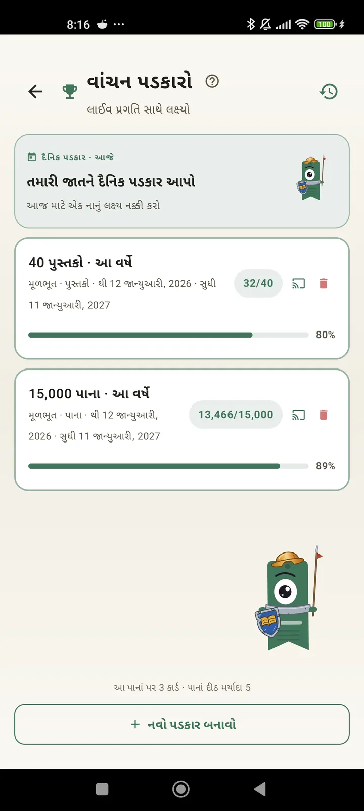

વાચક તરીકે તમારી જાતને ઓળખો
તમારા વાંચનનો પૂરો લાભ લેવા માટે પડકારો, Bingo, વિજેટ્સ અને બીજી ઘણી સુવિધાઓ. 3.7 માં નવું: પડકારો અને Bingo ના વિજેટ્સ.

વાંચન પડકારો
પાનાં, સ્ટ્રીક અથવા શૈલીઓ પ્રમાણે લક્ષ્ય નક્કી કરો. મફતમાં 15 સુધી સક્રિય પડકારો, Pro સાથે અમર્યાદિત. સાથે જ એક કસ્ટમાઇઝ કરી શકાય તેવી દૈનિક ચેલેન્જ, જે મર્યાદામાં ગણાતી નથી.

દૈનિક ચેલેન્જ
દરરોજ એક નવું લક્ષ્ય. તમારી સ્ટ્રીક ચાલુ રાખવા માટે મધ્યરાત્રિ પહેલાં ચેલેન્જ પૂરી કરો.

વાંચન Bingo
દર મહિને થીમવાળાં ખાનાં સાથે બે નવા Bingo. હરોળ, કૉલમ કે આખું કાર્ડ પૂરું કરો.

સાપ્તાહિક સારાંશ
દર સોમવારે તમારા અઠવાડિયાની ઝલક: વાંચેલાં પાનાં, કુલ સમય, સ્ટ્રીક અને પાછલા અઠવાડિયા સાથે સરખામણી.

માસિક સારાંશ
મહિનો પૂરો થાય ત્યારે Lecturameter તેનો સારાંશ આપે છે: પાનાં, સમય, પૂરાં કરેલાં પુસ્તકો, દિવસે દિવસે તમારી ગતિ અને તમારું મહિનાનું પુસ્તક.

Bingo વિજેટ Pro
આ મહિનાનું Bingo કાર્ડ, હંમેશા નજર સામે, તમે પૂરાં કરેલાં ખાનાં અને બનાવેલી લાઇનો સાથે.

પુસ્તક વિજેટ મફત
તમે જે પુસ્તક વાંચી રહ્યા છો તે સીધું હોમ સ્ક્રીન પર જુઓ: કવર, શીર્ષક, લેખક, પાનાં અને પ્રગતિની ટકાવારી, હંમેશા અપ ટુ ડેટ. તમે ઇચ્છો ત્યાં ફિટ થાય તે માટે તેનું કદ બદલી શકાય છે.
સાચું કહું યાર, આ એપ થેરાપી જેવી લાગે છે. હું દિવસના બે-ચાર પાનાં વાંચતો હતો, હવે લગભગ 20 પાનાં વાંચું છું અને હજી સુધારો થઈ રહ્યો છેવપરાશકર્તાનો પ્રતિસાદ, ઇમેઇલથી મળેલો

માસિક સરખામણી Pro
એપ ખોલ્યા વિના તમારા છેલ્લા મહિનાઓ પર ઝડપી નજર. દરેક મહિનાનાં પાનાંના બાર અને ચાલુ મહિનો હાઇલાઇટ કરેલો, જેથી એક નજરમાં ખબર પડે કે આ મહિને તમે ગયા મહિના કરતાં સારું કરી રહ્યા છો કે નહીં.

પડકારો વિજેટ Pro
તમારા સક્રિય પડકારો અને તેમની પ્રગતિ હોમ સ્ક્રીન પર. કયા બતાવવા તે પડકારો સ્ક્રીનમાંથી પસંદ કરો.